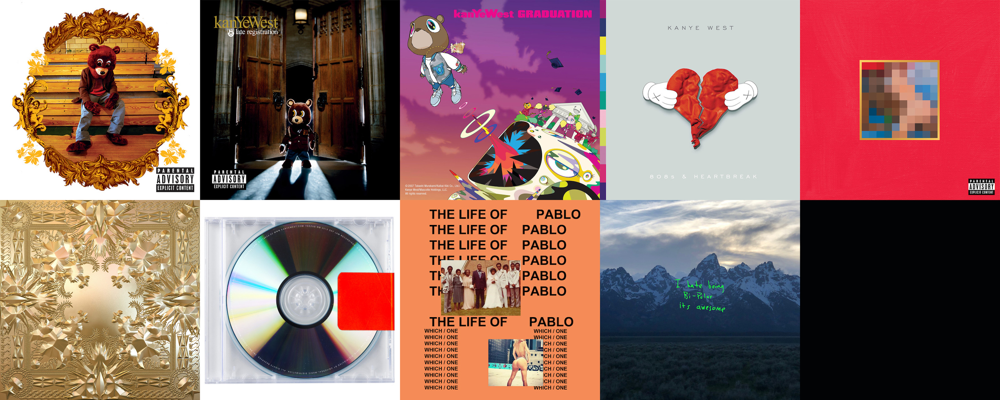

Ye started his early music career by producing beats for other rappers that were relatively small at the
time. He eventually got his big break in the year 2000 when he started producing for artists on Roc-A-Fella
which is a huge record label cofounded by Jay-Z and two others. He started gaining recognition when he
started making beats for Jay-Z and especially for his contribution to Jay-Z's 2001 hit album The Blueprint.
Even though Ye gained a lot of success being a producer, what he really wanted to do was be a rapper.
His breakthrough happened in 2002 when he was involved in a terrible car accident that left him with a
shattered jaw. His jaw had to be wired shut in reconstructive surgery and two weeks after being admitted
from the hospital he decided to record a song called Through the Wire. This song blew up and around the
same time he announced that he was coming out with an album called The College Dropout.
The College Dropout was released in 2004 and recieved critical acclaim from contemporary music critics,
it was voted the top album of the year by two major music publications and has consistently been ranked
among the great hip-hop works and debut albums by artists. The commercial success from his debut album
gave him the funds to hire a string orchestra for his second album Late Registration. This album was
also a commercial success and Ye was only going up from here. Graduation (2007), 808s & Heartbreak (2008),
My Beautiful Dark Twisted Fantasy (2010), Yeezus (2013), The Life of Pablo (2016), Ye (2018),
Jesus Is King (2019), Donda (2021), and Donda 2 (2022). These are all his studio albums that he put
out and there are more to come.
